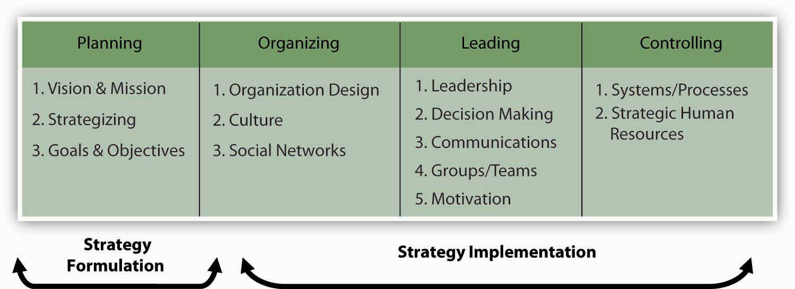
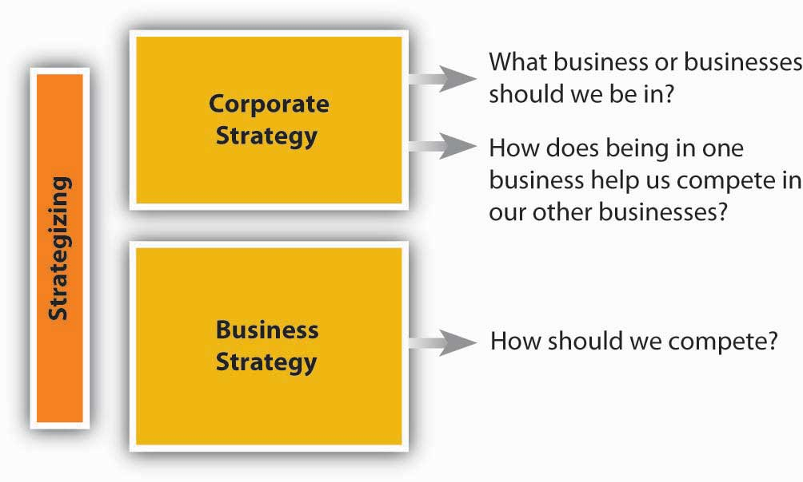
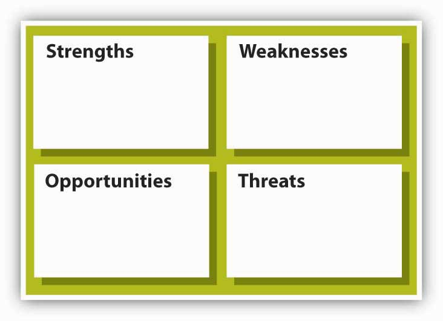

As you already know, the P-O-L-C framework starts with “planning.” You might also know that planning is related to, but not synonymous with, strategic management. Strategic managementWhat an organization does to achieve its mission and vision. reflects what a firm is doing to achieve its mission and vision, as seen by its achievement of specific goals and objectives.
A more formal definition tells us that the strategic management processA comprehensive and ongoing management process aimed at formulating and implementing effective strategies; it is a way of approaching business opportunities and challenges such that the firm achieves its vision and mission. “is the process by which a firm manages the formulation and implementation of its strategy.”Carpenter, M. A., & Sanders, W. G. (2009). Strategic management (p. 8). Upper Saddle River, NJ: Pearson/Prentice-Hall. The strategic management process is “the coordinated means by which an organization achieves its goals and objectives.”Carpenter, M. A., & Sanders, W. G. (2009). Strategic management (p. 10). Upper Saddle River, NJ: Pearson/Prentice-Hall. Others have described strategy as the pattern of resource allocation choices and organizational arrangements that result from managerial decision making.Mintzberg, H. 1978. Patterns in strategy formulation. Management Science, 24, 934–949. Planning and strategy formulationSynonymous with business planning and strategic planning. The set of processes involved in creating or determining the strategies of the organization; it focuses on the content of strategies. sometimes called business planning, or strategic planning, have much in common, since formulation helps determine what the firm should do. Strategy implementationThe methods by which strategies are operationalized or executed within the organization; it focuses on the processes through which strategies are achieved. tells managers how they should go about putting the desired strategy into action.
The concept of strategy is relevant to all types of organizations, from large, public companies like GE, to religious organizations, to political parties.
If vision and mission are the heart and soul of planning (in the P-O-L-C framework), then strategy, particularly strategy formulation, would be the brain. The following figure summarizes where strategy formulation (strategizing) and implementation fit in the planning and other components of P-O-L-C. We will focus primarily on the strategy formulation aspects of strategic management because implementation is essentially organizing, leading, and controlling P-O-L-C components.
Figure 5.7 Strategizing in P-O-L-C
You see that planning starts with vision and mission and concludes with setting goals and objectives. In-between is the critical role played by strategy. Specifically, a strategy captures and communicates how vision and mission will be achieved and which goals and objectives show that the organization is on the right path to achieving them.
At this point, even in terms of strategy formulation, there are two aspects of strategizing that you should recognize. The first, corporate strategyThe set of strategic alternatives that an organization chooses from as it manages its operations simultaneously across several industries and several markets. answers strategy questions related to “What business or businesses should we be in?” and “How does our business X help us compete in business Y, and vice versa?” In many ways, corporate strategy considers an organization to be a portfolio of businesses, resources, capabilities, or activities. You are probably familiar with McDonald’s, for instance, and their ubiquitous golden arches fast-food outlets. However, you may be less likely to know that McDonald’s owned the slightly upscale burrito vendor Chipotle for several years as well.Carpenter, M. A., & Sanders, W. G. (2008). Fast food chic? The Chipotle burrito. University of Wisconsin Business Case. The McDonald’s corporate strategy helped its managers evaluate and answer questions about whether it made sense for McDonald’s set of businesses to include different restaurants such as McDonald’s and Chipotle. While other food-service companies have multiple outlets—YUM! Brands, for example, owns A&W, Taco Bell, Pizza Hut, Long John Silver’s, and Kentucky Fried Chicken—McDonald’s determined that one brand (McDonald’s) was a better strategy for it in the future, and sold off Chipotle in 2006. The following figure provides a graphic guide to this kind of planning.
Figure 5.8 Corporate and Business Strategy
The logic behind corporate strategy is one of synergy and diversification. That is, synergies arise when each of YUM! Brands food outlets does better because they have common ownership and can share valuable inputs into their businesses. Specifically, synergyThe interaction of two or more activities, creating a combined effect greater than the sum of their individual efforts. exists when the interaction of two or more activities (such as those in a business) create a combined effect greater than the sum of their individual effects. The idea is that the combination of certain businesses is stronger than they would be individually because they either do things more cheaply or of higher quality as a result of their coordination under a common owner.
DiversificationThe number of different businesses that an organization is engaged in and the extent to which these businesses are related to one another. in contrast, is where an organization participates in multiple businesses that are in some way distinct from each other, as Taco Bell is from Pizza Hut, for instance. Just as with a portfolio of stock, the purpose of diversification is to spread out risk and opportunities over a larger set of businesses. Some may be high growth, some slow growth or declining; some may perform worse during recessions, while others perform better. Sometimes the businesses can be very different, such as when fashion sunglass maker Maui Jim diversified into property and casualty insurance through its merger with RLI Corporation.Retrieved October 30, 2008, http://www.secinfo.com/dRqWm.89X3.htm#34f. Perhaps more than a coincidence, RLI was founded some 60 years earlier as Replacement Lens International (later changed to its abbreviation, RLI, in line with its broader insurance products offerings), with the primary business of providing insurance for replacement contact lenses. There are three major diversification strategies: (1) concentric diversification, where the new business produces products that are technically similar to the company’s current product but that appeal to a new consumer group; (2) horizontal diversification, where the new business produces products that are totally unrelated to the company’s current product but that appeal to the same consumer group; and (3) conglomerate diversification, where the new business produces products that are totally unrelated to the company’s current product and that appeal to an entirely new consumer group.
Whereas corporate strategy looks at an organization as a portfolio of things, business strategyThe set of strategic alternatives that an organization chooses from as it conducts business in a particular industry or market. focuses on how a given business needs to compete to be effective. Again, all organizations need strategies to survive and thrive. A neighborhood church, for instance, probably wants to serve existing members, build new membership, and, at the same time, raise surplus monies to help it with outreach activities. Its strategy would answer questions surrounding the accomplishment of these key objectives. In a for-profit company such as McDonald’s, its business strategy would help it keep existing customers, grow its business by moving into new markets and taking customers from competitors like Taco Bell and Burger King, and do all this at a profit level demanded by the stock market.
So what are the inputs into strategizing? At the most basic level, you will need to gather information and conduct analysis about the internal characteristics of the organization and the external market conditions. This means an internal appraisal and an external appraisal. On the internal side, you will want to gain a sense of the organization’s strengths and weaknesses; on the external side, you will want to develop some sense of the organization’s opportunities and threats. Together, these four inputs into strategizing are often called SWOT analysisAn assessment of strengths, weaknesses, opportunities, and threats. which stands for strengths, weaknesses, opportunities, and threats (see the SWOT analysis figure). It does not matter if you start this appraisal process internally or externally, but you will quickly see that the two need to mesh eventually. At the very least, the strategy should leverage strengths to take advantage of opportunities and mitigate threats, while the downside consequences of weaknesses are minimized or managed.
Figure 5.9 SWOT Analysis
SWOT was developed by Ken Andrews in the early 1970s.Andrews, K. (1971). The concept of corporate strategy. Homewood, IL: R. D. Irwin. An assessment of strengths and weaknesses occurs as a part of organizational analysis; that is, it is an audit of the company’s internal workings, which are relatively easier to control than outside factors. Conversely, examining opportunities and threats is a part of environmental analysis—the company must look outside of the organization to determine opportunities and threats, over which it has lesser control.
Andrews’s original conception of the strategy model that preceded the SWOT asked four basic questions about a company and its environment: (1) What can we do? (2) What do we want to do? (3) What might we do? and (4) What do others expect us to do?
A good starting point for strategizing is an assessment of what an organization does well and what it does less well. In general good strategies take advantage of strengths and minimize the disadvantages posed by any weaknesses. Michael Jordan, for instance, is an excellent all-around athlete; he excels in baseball and golf, but his athletic skills show best in basketball. As with Jordan, when you can identify certain strengths that set an organization well apart from actual and potential competitors, that strength is considered a source of competitive advantage. The hardest thing for an organization to do is to develop its competitive advantage into a sustainable competitive advantageA competitive advantage that will exist after all attempts at strategic imitation have ceased. where the organization’s strengths cannot be easily duplicated or imitated by other firms, nor made redundant or less valuable by changes in the external environment.
On the basis of what you just learned about competitive advantage and sustainable competitive advantage, you can see why some understanding of the external environment is a critical input into strategy. Opportunities assess the external attractive factors that represent the reason for a business to exist and prosper. These are external to the business. What opportunities exist in its market, or in the environment, from which managers might hope the organization will benefit? Threats include factors beyond your control that could place the strategy, or the business, at risk. These are also external—managers typically have no control over them, but may benefit by having contingency plans to address them if they should occur.
Unnamed Publisher is a new college textbook company (and the publisher of this POM text!) that operates with the tagline vision of “Free textbooks. Online. Anytime. Anywhere. Anyone.”Retrieved October 28, 2008, from http://www.gone.2012books.lardbucket.org.
Strengths
Weaknesses
Opportunities
Threats
In a nutshell, SWOT analysis helps you identify strategic alternatives that address the following questions:
Before wrapping up this section, let’s look at a few of the external and internal analysis tools that might help you conduct a SWOT analysis. These tools are covered in greater detail toward the end of the chapter.
Internal analysis tools help you identify an organization’s strengths and weaknesses. The two tools that we identify here, and develop later in the chapter, are the value chain and VRIO tools. The value chain asks you, in effect, to take the organization apart and identify the important constituent parts. Sometimes these parts take the form of functions, like marketing or manufacturing. For instance, Disney is really good at developing and making money from its branded products, such as Cinderella or Pirates of the Caribbean. This is a marketing function (it is also a design function, which is another Disney strength).
Value chain functions are also called capabilities. This is where VRIO comes in. VRIO stands for valuable, rare, inimitable, and organization—basically, the VRIO framework suggests that a capability, or a resource, such as a patent or great location, is likely to yield a competitive advantage to an organization when it can be shown that it is valuable, rare, difficult to imitate, and supported by the organization (and, yes, this is the same organization that you find in P-O-L-C). Essentially, where the value chain might suggest internal areas of strength, VRIO helps you understand whether those strengths will give it a competitive advantage. Going back to our Disney example, for instance, strong marketing and design capabilities are valuable, rare, and very difficult to imitate, and Disney is organized to take full advantage of them.
While there are probably hundreds of different ways for you to study an organizations’ external environment, the two primary tools are PESTEL and industry analysis. PESTEL, as you probably guessed, is simply an acronym. It stands for political, economic, sociocultural, technological, environmental, and legal environments. Simply, the PESTEL framework directs you to collect information about, and analyze, each environmental dimension to identify the broad range of threats and opportunities facing the organization. Industry analysis, in contrast, asks you to map out the different relationships that the organization might have with suppliers, customers, and competitors. Whereas PESTEL provides you with a good sense of the broader macro-environment, industry analysis should tell you about the organization’s competitive environment and the key industry-level factors that seem to influence performance.
Strategy formulation is an essential component of planning; it forms the bridge that enables the organization to progress from vision and mission to goals and objectives. In terms of the P-O-L-C framework, strategy formulation is the P (planning) and strategy implementation is realized by O-L-C. Corporate strategy helps to answer questions about which businesses to compete in, while business strategy helps to answer questions about how to compete. The best strategies are based on a thorough SWOT analysis—that is, a strategy that capitalizes on an organization’s strengths, weaknesses, opportunities, and threats.